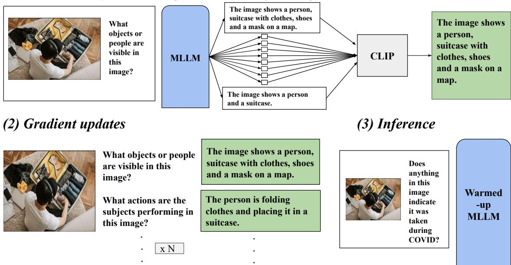
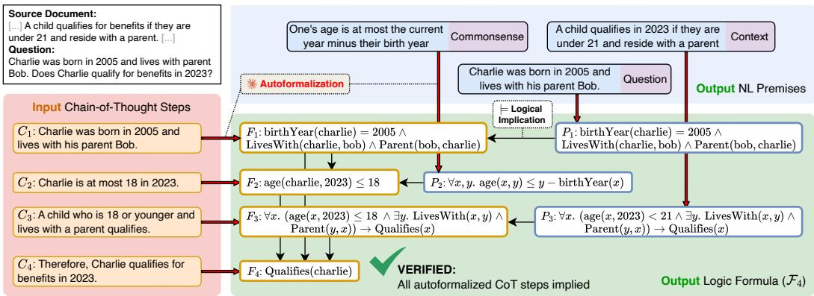

📝 微观深度解读
2025-11-07
为您精选了 6 篇高质量 AI 论文的深度解读
微调转移
大型语言模型
模型迭代
训练成本
多任务学习
推荐分数: 0.522
📖 简介：本文提出了一种名为“微调转移”的方法，旨在解决大型语言模型（LLM）在版本更新时需重复昂贵微调的问题。通过计算源模型的差异向量并将其应用于目标模型，显著提升了新版本的性能，减少了训练成本。实验表明，该方法在多任务和多语言场景下均表现出色，提供了一种高效的模型迭代策略。

测试时预热
多模态大语言模型
复杂推理任务
弱监督辅助任务
视觉问答
推荐分数: 0.520
📖 简介：本文提出了一种名为“测试时预热”（Test-Time Warmup, TTW）的方法，以提升多模态大语言模型（MLLMs）在复杂推理任务中的表现。TTW通过利用弱监督辅助任务数据，在推理前对每个测试样本进行短暂的模型适应，从而显著提高了模型的准确性和鲁棒性，实验结果显示在多个视觉问答基准上均取得了显著的性能提升。

查看详细解读 →
大语言模型
医学领域
记忆现象
有益记忆
安全性与有效性
推荐分数: 0.507
📖 简介：本文首次系统评估了大语言模型（LLMs）在医学领域的记忆现象，分析了其普遍性、特征和潜在影响。研究发现，LLMs在适应过程中会显著记忆训练数据，存在有益、无信息和有害三种类型的记忆。基于此，提出了促进有益记忆、减少无信息记忆和防范有害记忆的实践建议，以提升医学应用的安全性和有效性。

大型语言模型
幻觉检测
自动化检测
生成式AI
评估基准
推荐分数: 0.497
📖 简介：本文提出了FaithJudge框架，通过整合人类标注的幻觉示例，显著提升了自动化幻觉检测的准确性和可靠性。该方法解决了大型语言模型在检索增强生成任务中产生不支持信息的问题，并提供了一个新的评估基准，推动了生成式AI系统的可信性研究。

神经-符号框架
链式思维推理
逻辑有效性
推理准确性
自我反思
推荐分数: 0.492
📖 简介：本文提出了VeriCoT，一个神经-符号框架，通过将链式思维推理步骤形式化为一阶逻辑，自动验证其逻辑有效性。VeriCoT有效识别推理中的逻辑缺陷，并利用验证信号促进自我反思，提升大型语言模型的推理准确性和可靠性。实验结果表明，该方法在多个基准数据集上显著提高了推理的有效性和最终答案的正确性。

查看详细解读 →
重用预训练数据
大语言模型
检索增强生成
计算效率提升
知识密集型任务
推荐分数: 0.396
📖 简介：本文提出了一种结合检索增强生成和测试时计算的方法，以提高大语言模型（LLM）的性能。研究表明，重用预训练数据可显著提升模型在知识密集型任务上的准确性，尤其在MMLU基准上实现了约5倍的计算效率提升。这一方法强调了数据质量的重要性，并为小型模型在资源受限环境中的应用提供了新思路。